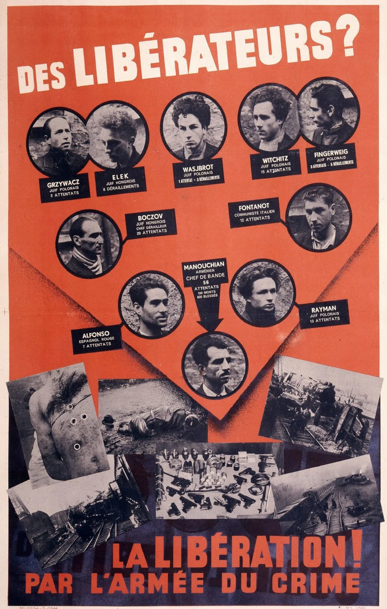

Publication d’archives
L'Affiche Rouge
Date indiquée par Facebook · 21 février 2022
Texte conservé avec la publication
Contexte du dossier
Les publications du 21 février 2021 puis du 21 février 2022 rendent hommage au groupe Manouchian et aux FTP-MOI. Elles rappellent les résistants exécutés au Mont-Valérien et le destin d’Olga Bancic, envoyée en Allemagne puis tuée à Stuttgart. Le poème d’Aragon, puis sa mise en musique par Léo Ferré, apparaissent comme des chemins de transmission. Face au racisme et à la xénophobie, cette mémoire rappelle une vérité politique : des immigrés ont combattu pour la liberté du pays où ils vivaient. Leur engagement dément les discours qui prétendent réserver la dignité ou le patriotisme à une origine.

Sources
Archive rouge · export Facebook · AR-0002-FB-01956
À lire aussi · Marcel Paul, au-delà d’un nom de parking